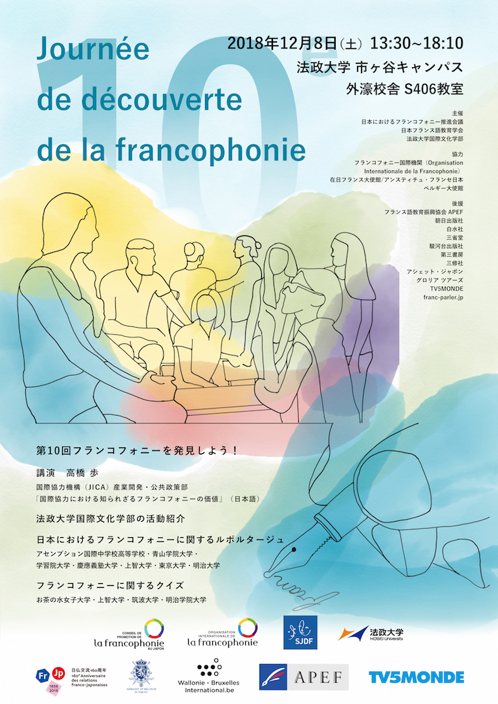
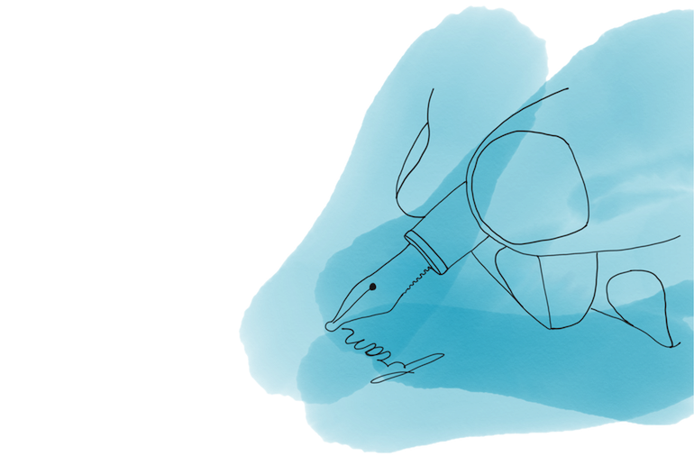

10e JDF - Poster
A poster created for "Let's Discover the Francophonie!”. A culture day organized by the Japan French Education Association and the Francophonie Promotion Council in Japan.
Two ways of communicating the language is illustrated : “talk” - people chatting with each other and “write” - a hand writing french.
The five main colors used in the poster are inspired by the organization’s logo. These colors muting and creating new colors represents the expression of cultures and values through the french language.
The use of a sans serif font make the poster information easy to read even with two complete different languages. The illustrations drawn with simple lines don’t overcrowd the poster.
, Illustrator, Photoshop Sketch


Links
La Société Japonaise de Didactique du Français - 10e Journée de Découverte de la francophonie